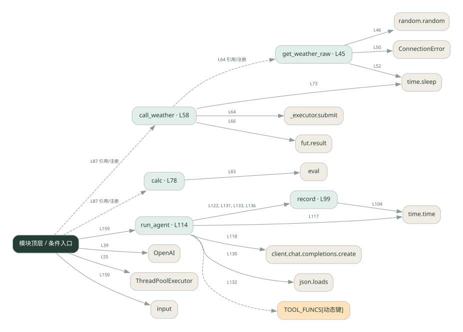

1-10 · 全课程第 10 节
完整单 Agent
full_agent.py
源码快照 b14806a00b9d · 静态解析 · 2026-09-10
01 / 要完成的事
把工具分发、错误处理和记录接入同一个模型循环。
02 / 为什么要做
单个机制学会后，需要看到它们如何共同服务一次用户请求。
03 / 当前代码状态
模型请求与本地工具是不同边界：这些文件中的天气工具使用示例逻辑，不能将示例天气当成实时查询结果。
源码存在 eval 调用。请先看表达式限制条件；调用图只能说明它被使用，不能证明输入已被安全限制。
存在外部服务或模型依赖；执行前需按源文件配置依赖和凭据，可能联网或产生 API 费用。 本次只做静态解析，没有运行练习，也没有替你填写或修改原代码。
04 / 调用图
打开大图 ↗实线：源码中的直接调用；虚线：函数引用/注册、动态调用或按方法名推断的候选。L 是调用所在源码行号。箭头不表示执行顺序或每次必经；分支、循环、异步调度及框架内部调用需结合源码。灰色是外部/未解析目标，橙色是动态分发；省略 print、len 和常规容器操作以减少干扰。孤立函数可能尚未接入。

先从 模块入口 出发，沿箭头找到本文件函数，再查看外部调用或动态分发。右侧调用清单保留所有静态调用点，能回到原文件逐行对照。
05 / 函数定位
| 函数 / 定义行 | 职责（源码注释） | 内部调用 |
|---|---|---|
get_weather_rawL45 | 以源码函数体为准；下列调用展示其依赖。 | random.random, ConnectionError, time.sleep |
call_weatherL58 | 以源码函数体为准；下列调用展示其依赖。 | range, _executor.submit, fut.result, print, time.sleep |
calcL78 | 以源码函数体为准；下列调用展示其依赖。 | set, any, str, eval |
recordL99 | 以源码函数体为准；下列调用展示其依赖。 | len, round, time.time, trace.append, print |
run_agentL114 | 以源码函数体为准；下列调用展示其依赖。 | messages.append, range, time.time, client.chat.completions.create, record, json.loads, TOOL_FUNCS[动态键], str |
这样做的优点
一个入口能串起模型决策、执行工具和返回答案。
代价与局限
循环控制更复杂，工具出错和模型反复调用都需要上限与诊断。
适用场景
小型有工具的问答助手原型。
不宜直接照搬
直接承担高风险写操作的生产系统。
动手检验理解
给一个需要天气和计算的问题，追踪两次工具结果怎样回到模型。
有未实现位置时先预测，再补齐验证。能启动不等于逻辑正确。
查看全部 49 个静态调用 / 引用点
| 调用方 | 目标 | 源码行 | 类型 |
|---|---|---|---|
| <模块入口> | OpenAI | 39 | 调用 |
| get_weather_raw | random.random | 46 | 调用 |
| get_weather_raw | ConnectionError | 50 | 调用 |
| get_weather_raw | time.sleep | 52 | 调用 |
| <模块入口> | ThreadPoolExecutor | 55 | 调用 |
| call_weather | range | 63 | 调用 |
| call_weather | _executor.submit | 64 | 调用 |
| call_weather | fut.result | 66 | 调用 |
| call_weather | print | 70 | 调用 |
| call_weather | print | 72 | 调用 |
| call_weather | time.sleep | 73 | 调用 |
| calc | set | 80 | 调用 |
| calc | any | 81 | 调用 |
| calc | str | 83 | 调用 |
| calc | eval | 83 | 调用 |
| record | len | 100 | 调用 |
| record | round | 104 | 调用 |
| record | time.time | 104 | 调用 |
| record | trace.append | 105 | 调用 |
| record | print | 111 | 调用 |
| run_agent | messages.append | 115 | 调用 |
| run_agent | range | 116 | 调用 |
| run_agent | time.time | 117 | 调用 |
| run_agent | client.chat.completions.create | 118 | 调用 |
| run_agent | record | 122 | 调用 |
| run_agent | messages.append | 127 | 调用 |
| run_agent | json.loads | 130 | 调用 |
| run_agent | record | 131 | 调用 |
| run_agent | TOOL_FUNCS[动态键] | 132 | 调用 |
| run_agent | record | 133 | 调用 |
| run_agent | str | 133 | 调用 |
| run_agent | messages.append | 134 | 调用 |
| run_agent | str | 134 | 调用 |
| run_agent | record | 136 | 调用 |
| run_agent | messages.append | 137 | 调用 |
| <模块入口> | print | 144 | 调用 |
| <模块入口> | print | 145 | 调用 |
| <模块入口> | print | 146 | 调用 |
| <模块入口> | print | 147 | 调用 |
| <模块入口> | input().strip | 150 | 调用 |
| <模块入口> | input | 150 | 调用 |
| <模块入口> | print | 152 | 调用 |
| <模块入口> | user.lower | 156 | 调用 |
| <模块入口> | print | 157 | 调用 |
| <模块入口> | run_agent | 159 | 调用 |
| <模块入口> | print | 160 | 调用 |
| call_weather | get_weather_raw | 64 | 引用/注册 |
| <模块入口> | call_weather | 87 | 引用/注册 |
| <模块入口> | calc | 87 | 引用/注册 |